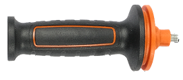
Рукоятка боковая ×1
BWS-18Li-XK
* Без АКБ и ЗУ

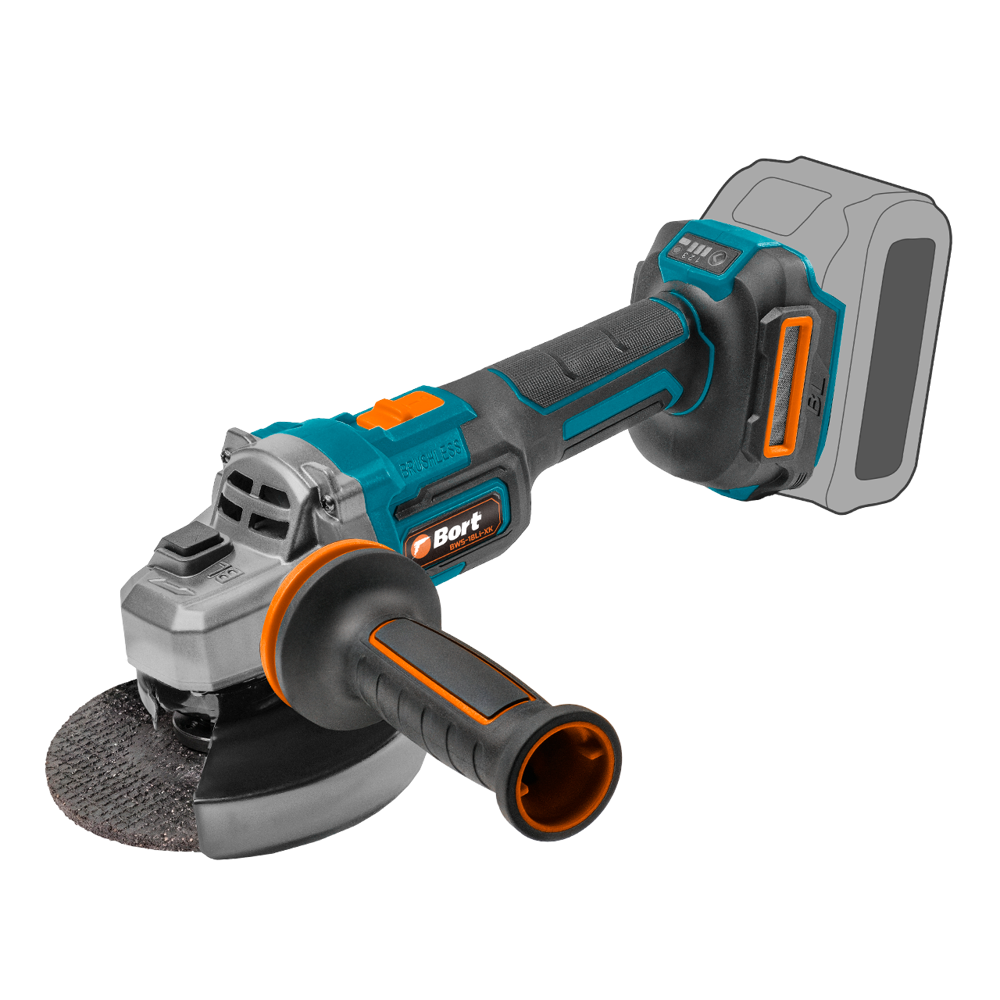
Система Kickback Control распознает заклинивание диска и останавливает двигатель, снижая риск резкого рывка. При резке и шлифовке металла, арматуры или плитки диск может закусить в любой момент. Kickback Control останавливает УШМ, защищая оператора от травмы.

При работе с толстым металлом или плотными материалами двигатель не теряет обороты, благодаря чему рез остается стабильным, а производительность не снижается.
Инструмент набирает обороты постепенно, без рывков, что повышает безопасность и комфорт при запуске.
Система предотвращает самопроизвольный запуск, например при замене АКБ.

4 000 об/мин
Скорость холостого хода 1
6 000 об/мин
Скорость холостого хода 2
8 000 об/мин
Скорость холостого хода 3
AUTO
Автоматический (интеллектуальный) режим

Автоматический режим -
УШМ сама подбирает скорость
под нагрузку и дольше работает
на одном АКБ.
BWS-18Li-XK имеет AUTO-режим, в котором система сама адаптирует обороты под текущие условия, экономя заряд АКБ, гибко управляя мощностью в зависимости от нагрузки. На начальном этапе BWS-18Li-XK ограничивает пусковые обороты, обеспечивая плавный и контролируемый старт. При возрастании нагрузки электроника поддерживает крутящий момент на максимальном уровне, сохраняя эффективность реза и не давая двигателю «захлебнуться». Режим особенно эффективен при работе с неоднородными материалами, например при переходе с основного металла на сварной шов.
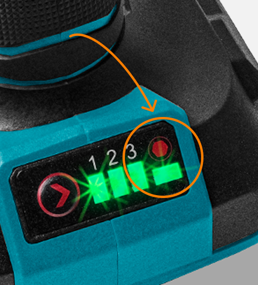

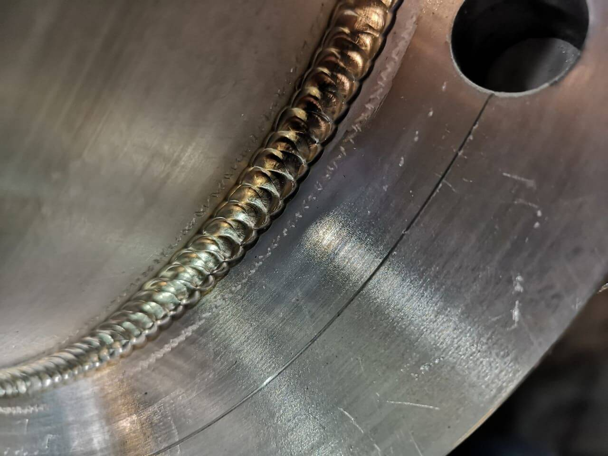
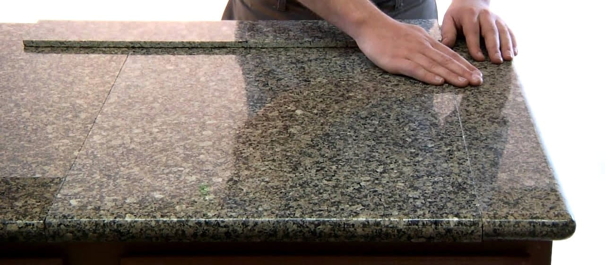

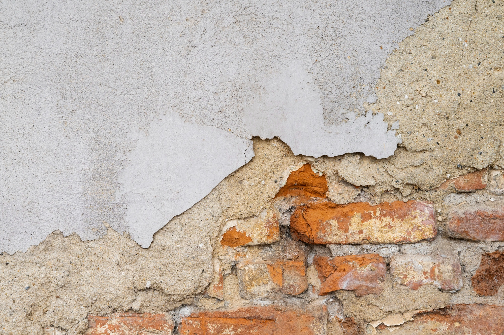
Увеличенный ресурс, мощность и время работы по сравнению с обычными щеточными моторами.
Высокий КПД благодаря эффективному преобразованию энергии.
*по сравнению с обычными щеточными моторами
Задерживает абразивную пыль, металлическую и бетонную стружку, не давая им попасть внутрь корпуса. Это снижает износ двигателя, предотвращает перегрев и продлевает срок службы инструмента.
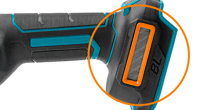
Ускоряет подготовку инструмента. Положение кожуха можно изменить без отвертки и ключа, быстро направив искры и частицы материала в безопасную сторону при смене рабочей позиции.
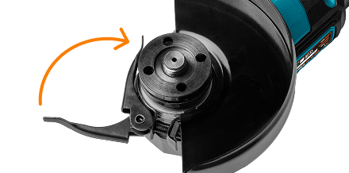
Блокировка шпинделя фиксирует вал, позволяя менять диск без дополнительного инструмента. Упрощает замену оснастки и сокращает время между операциями.
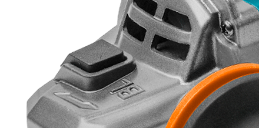
Резиновые демпферы перфоратора способствуют постоянному и полному контакту аккумулятора с инструментом, не допуская вибрации батареи. Это экономит энергию и продлевает время работы на одном заряде.
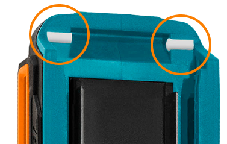

Крепление аккумулятора с единым разъёмом на инструменте позволяет использовать аккумуляторы любой емкости внутри экосистемы аккумуляторов Bort или Makita 18V LXT, номинальной мощности 18 B.
Это дает возможность использовать уже имеющиеся батареи и экономить до 70% стоимости инструмента при наличии аккумуляторов.
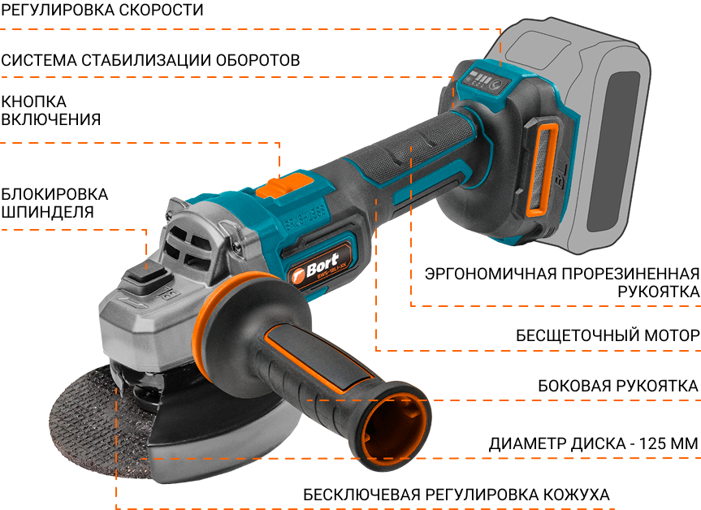
Машина шлифовальная угловая аккумуляторная BORT BWS-18Li-XK ×1

Рукоятка боковая ×1

Ключ для смены диска ×1

Защитный кожух ×1
Аккумуляторная углошлифовальная машина Bort BWS-18Li-XK сочетает современные инженерные решения, которые действительно влияют на выбор инструмента. В отличие от большинства моделей этого класса, она оснащена сразу двумя электронными системами — Kickback Control и стабилизацией оборотов. Такое сочетание встречается значительно реже и является одним из ключевых преимуществ модели.
Kickback Control и плавный пуск повышают безопасность и комфорт работы. Kickback Control отключает двигатель при заклинивании диска. Если при резке металла, арматуры или профильной трубы диск закусывает, инструмент не пытается провернуться в руках оператора, а останавливается. Это снижает риск резкого рывка, повышает безопасность работы и становится весомым аргументом при выборе инструмента. Плавный пуск постепенно набирает обороты, уменьшая нагрузку на двигатель и помогает уверенно удерживать инструмент при включении.
Электронная стабилизация оборотов поддерживает скорость вращения диска при изменении нагрузки. При работе с толстым металлом или плотными материалами двигатель не теряет обороты, благодаря чему рез остается стабильным, а производительность не снижается.
Бесщеточный двигатель мощностью 1000 Вт обеспечивает высокую производительность при компактных размерах инструмента. Бесщеточная конструкция отличается высоким КПД, меньшим нагревом, не требует замены угольных щеток и рассчитана на длительную работу под нагрузкой.
Три скорости вращения — 4000, 6000 и 8000 об/мин — позволяют подобрать оптимальный режим для резки, зачистки и шлифования различных материалов. Четвертый режим (красный индикатор) это AUTO-режим, в котором система сама настраивает скорость вращения под текущие условия, экономя заряд АКБ, гибко управляя мощностью в зависимости от нагрузки с учетом плотности материала. В отличие от односкоростных моделей, BORT BWS-18Li-XK обеспечивает больше контроля и помогает эффективнее расходовать заряд аккумулятора. Бесключевая регулировка защитного кожуха ускоряет подготовку инструмента. Его положение можно изменить без отвертки и ключа, быстро направив искры и частицы материала в безопасную сторону при смене рабочей позиции.
Блокировка шпинделя упрощает замену оснастки и сокращает время между операциями. УШМ рассчитана на популярные диски диаметром 125 мм, поэтому для нее легко подобрать отрезные, шлифовальные, лепестковые и алмазные круги.
Совместимость с аккумуляторной системой Макита 18 V LXT позволяет использовать распространенные аккумуляторы этой платформы. Модель работает на литий-ионных батареях номинальным напряжением 18 В.